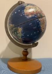
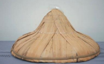
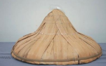

平 價 百 貨 公 司
✧想不 到的 舶來 品
對於海島型經 濟體的臺灣而 言，國際貿易為 自古以來不可 或缺的命脈。隨 著近代交通、跨 國企業的急速 發展，各地商品 互通有無之下， 搭建起交織的 全球貿易供應 鍊，當買賣國外 商品的難度、成本大幅降低，舶 來品不知不覺 充斥你我的生 活，也讓人容易 忽略在地性高 的雜貨店也早 是國際貿易鍊 的一環。逛一逛 吧！雜貨店中 有許多令人意 想不到的舶來 品！
※Bonart 巧克力
--------------------------------------------------------------------------------
✧想不 到的 高價 品

從一塊錢購買 一根冰棒到一 塊錢購買一顆 糖，跨世代的兒 時樂趣總是可 以在雜貨用小 小的金額獲得 大大的滿足，親 民的售價是雜 貨店的特色之 一。但比拚平價 之餘，雜貨店最 貴的商品售價 可能是多少 呢？猜一猜 吧！臺南雜貨 店有哪些意想 不到的高價品 呢？
※車輪牌鮑魚罐頭
------------------------------------------------------------
✧想不 到的 特賣 品
身為賣店，雜貨 店的進貨策略 須能回應消費 者的需求，加上 客群多為在地 鄰里，地方連結 性強，所販售的 商品富有地區 特色，一間雜貨 店的商品，往往 能反映一個地 方的消費習慣、 人口組成與職 業類別。看一看 吧！臺南雜貨 店架上的特買 品展示出哪些 地方特色？
 

※進森發號所售的補魚網工具
--------------------------------------------------------------------------------
✧想不 到的 稀有 品
雜貨店常以住 家作為店面，比 起空間寸土寸 金的連鎖店較 易囤積舊商品， 許多老店家因 此保留現今已 難以覓得或是 絕版的商品。為 跟上消費需求， 新商品如雨後 春筍般不斷湧 入市場，同時， 曾經熱銷的商 品卻乏人問津， 在商品架上默默退至角落，逐 漸褪色，一起褪 去的還有臺南 某個年代的消 費習慣，某個時 期的生活面貌。 翻一翻吧！這 些雜貨店商品 背後藏有的臺 南故事。
--------------------------------------------------------------------------------
想不 到的 美妝 品
美妝店未普及 的年代，除日常 雜貨，雜貨店亦 銷售美妝用品， 使得一提起雜 貨店，花露水、 爽身粉皆是榜 上有名的代表 商品。如今，阿 嬤時代熱銷的 美妝品已不是 梳妝臺的常客， 反倒時常現身 於敬拜神明的 供桌上、舉行嫁 娶的儀式裡，用 途的改變淺移 默化地轉換商 品扮演的社會 角色，無聲地被記錄於雜貨店 的買賣之中。找 一找吧！雜貨 店裡販售的時 代香氣。